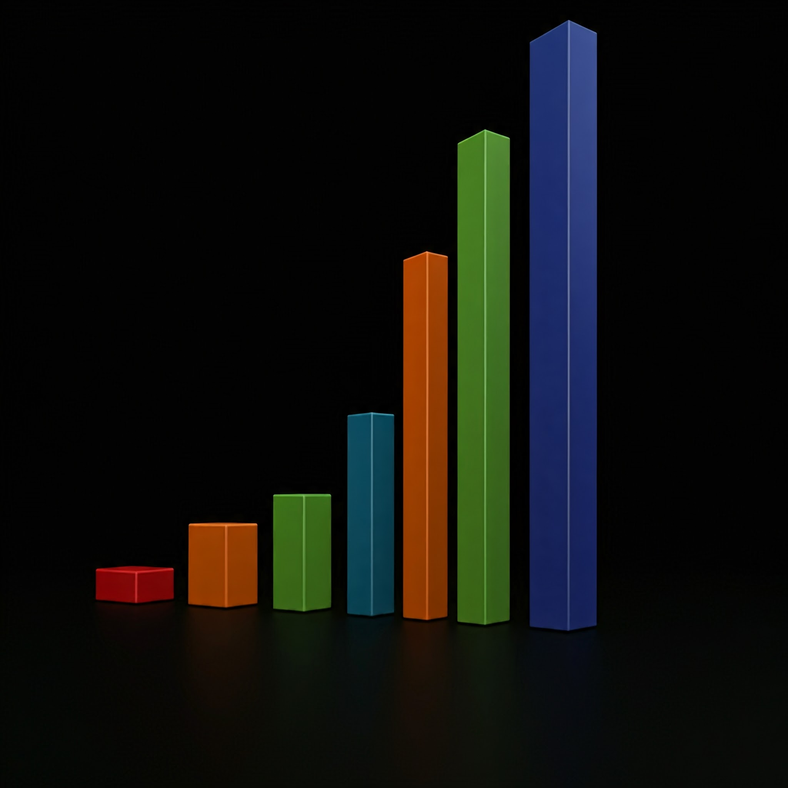

How Searching and Sorting Algorithms work and explain their time complexity?
Searching and sorting are fundamental operations in computer science and are often associated with specific
algorithms. Understanding these algorithms, along with their time complexities, is crucial for designing
efficient software. Let's look at both concepts in detail, with examples.